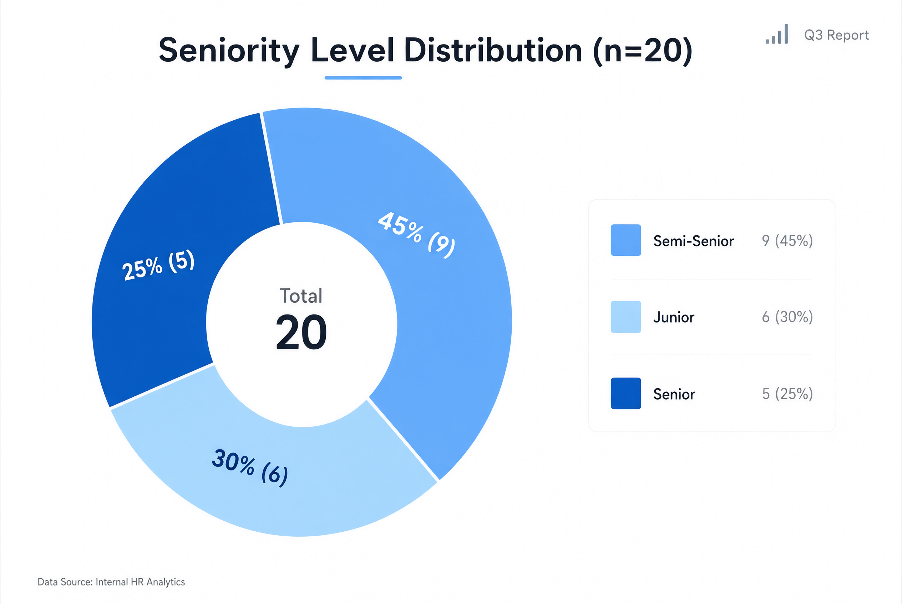
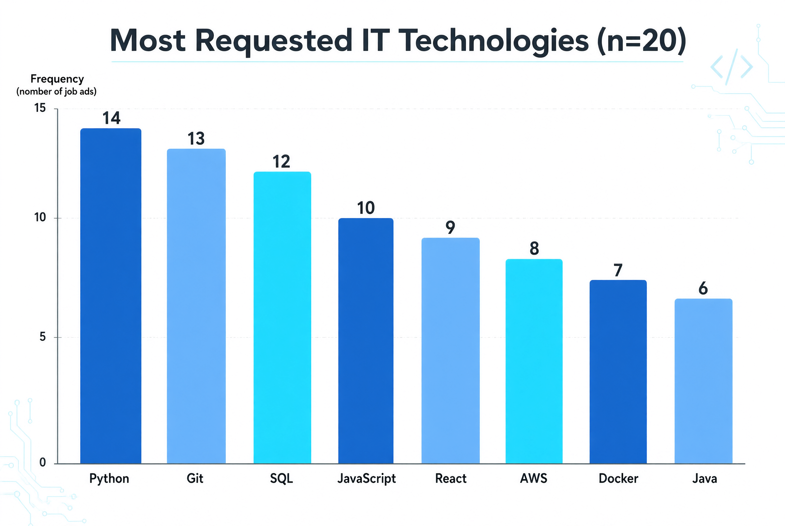
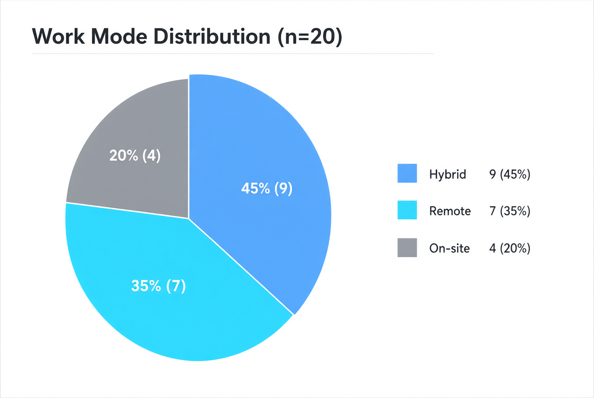
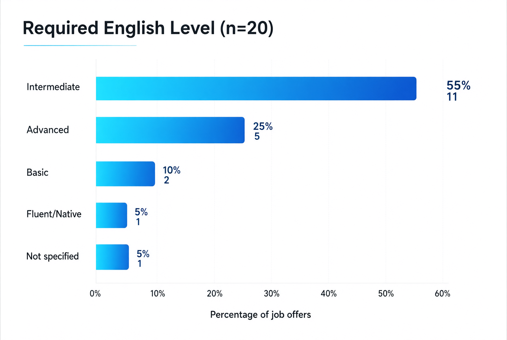
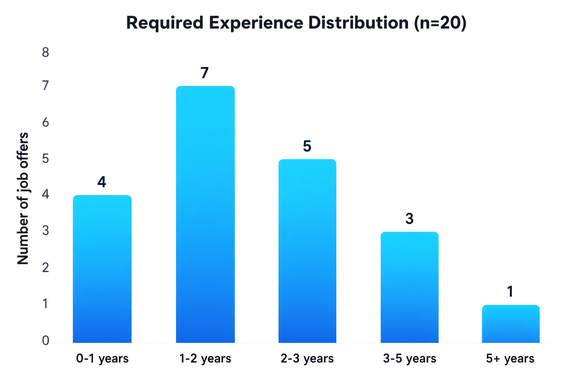
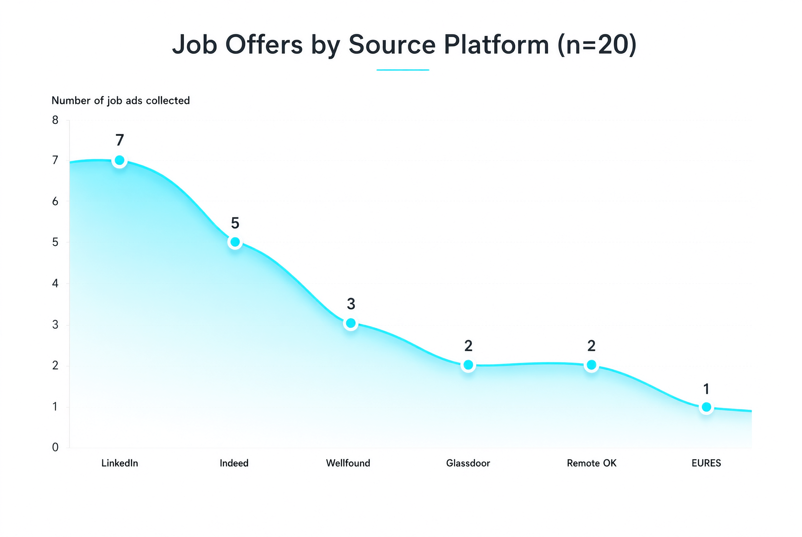
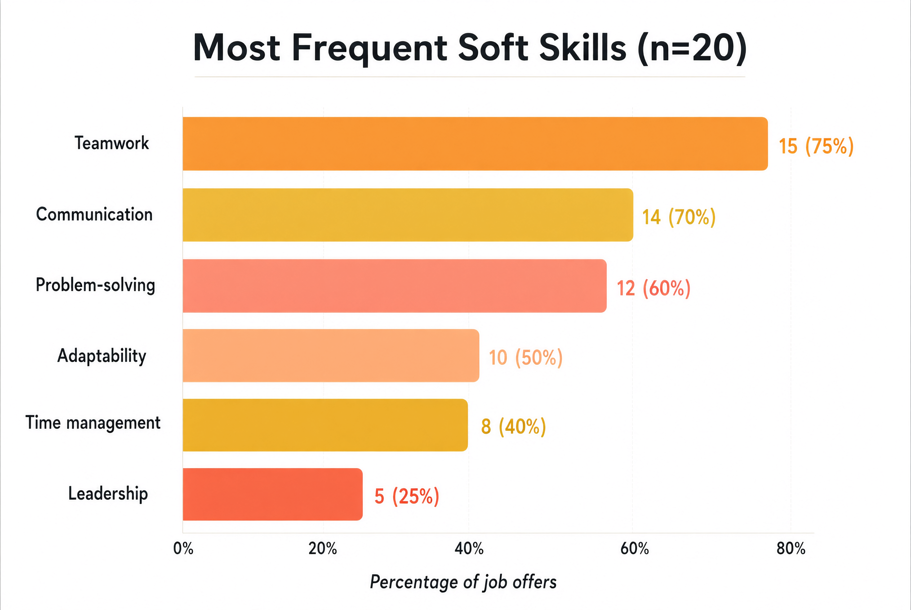

Inglés y Probabilidad y Estadísticas para el Análisis de Sistemas
Carrera: Análisis de Sistemas
Institución: IFTS N°21
Ciclo Lectivo: 2026 - Segundo Cuatrimestre
Alumnos:
Noelia Izquierdo
Pablo Bradford
Ricardo Medina
Docente: Cecilia Lupía
🎨 Colores por alumno en la exposición
🎤 NOELIA: Introducción (violeta)🎤 PABLO: Resumen, Glosario y Conclusiones (verde)🎤 RICARDO: Metodología y Análisis Estadístico (amarillo)
01. Introduction01. IntroducciónNOELIA
▶ Reproducción completa:
In today's rapidly evolving technological landscape, understanding the IT job market has become crucial for students and professionals alike. This integrated project combines English language skills with statistical analysis to explore what companies are really looking for in IT professionals.
En el panorama tecnológico actual en rápida evolución, comprender el mercado laboral de TI se ha vuelto crucial para estudiantes y profesionales por igual. Este proyecto integrador combina habilidades del idioma inglés con análisis estadístico para explorar qué buscan realmente las empresas en profesionales de TI.
Our research focuses on analyzing real job advertisements from various platforms to identify patterns, requirements, and trends in the IT industry. Through this analysis, we aim to provide valuable insights for students preparing to enter the workforce.
Nuestra investigación se centra en analizar ofertas de trabajo reales de diversas plataformas para identificar patrones, requisitos y tendencias en la industria de TI. A través de este análisis, nuestro objetivo es proporcionar información valiosa para los estudiantes que se preparan para ingresar al mercado laboral.
The project addresses key questions such as: What technical skills are most in demand? How much experience do companies require? What level of English is necessary? What work modalities predominate? And what soft skills are valued by employers?
El proyecto aborda preguntas clave como: ¿Qué habilidades técnicas tienen mayor demanda? ¿Cuánta experiencia requieren las empresas? ¿Qué nivel de inglés es necesario? ¿Qué modalidades de trabajo predominan? ¿Y qué habilidades blandas valoran los empleadores?
02. Methodology02. MetodologíaRICARDO
▶ Reproducción completa:
Para llevar a cabo este proyecto integrador, seguimos una metodología estructurada que combina la recolección de datos reales con el análisis estadístico y el desarrollo de vocabulario técnico en inglés.
Fuentes de Datos
Recolectamos veinte ofertas laborales de IT escritas en inglés, utilizando seis fuentes diferentes: LinkedIn con siete ofertas, Indeed con cinco, Wellfound con tres, Glassdoor con dos, Remote OK con dos y EURES con una oferta.
Proceso de Recolección
Cada oferta laboral fue analizada y transformada en una fila de nuestra base de datos, registrando el título del puesto, la ubicación, la modalidad de trabajo, la experiencia requerida, el nivel de inglés, las habilidades técnicas, las habilidades blandas y el nivel de seniority.
Análisis Estadístico
Una vez recolectados los datos, procedimos a realizar el análisis estadístico que incluye frecuencias y porcentajes de cada variable, tablas de distribución, gráficos representativos, identificación de patrones y tendencias, e interpretación de resultados.
03. Job Advertisement Summary03. Resumen de los Avisos LaboralesPABLO
▶ Reproducción completa:
We analyzed twenty job advertisements from various IT companies and platforms. The positions ranged from Junior to Senior levels, covering different specializations within the IT field.
Analizamos veinte ofertas de trabajo de diversas empresas y plataformas de TI. Los puestos iban desde niveles Junior hasta Senior, cubriendo diferentes especializaciones dentro del campo de TI.
The most common job titles included Software Developer, Full Stack Developer, Data Analyst, DevOps Engineer, and QA Tester. These positions were distributed across different seniority levels, with a significant presence of semi-senior positions.
Los títulos de puestos más comunes incluyeron Desarrollador de Software, Desarrollador Full Stack, Analista de Datos, Ingeniero DevOps y Tester QA. Estos puestos se distribuyeron en diferentes niveles de seniority, con una presencia significativa de puestos semi-senior.
Regarding work modalities, we found a clear trend towards hybrid and remote work arrangements. Only twenty percent of positions required full on-site presence, reflecting the post-pandemic shift in work culture within the IT industry.
En cuanto a las modalidades de trabajo, encontramos una clara tendencia hacia arreglos de trabajo híbrido y remoto. Solo el veinte por ciento de los puestos requerían presencia completa en el lugar de trabajo, reflejando el cambio en la cultura laboral post-pandemia dentro de la industria de TI.
Technical requirements varied by position, but common technologies included Python, Git, SQL, JavaScript, React, AWS, Docker, and Java. Version control with Git was almost universally required across all positions.
Los requisitos técnicos variaban según el puesto, pero las tecnologías comunes incluían Python, Git, SQL, JavaScript, React, AWS, Docker y Java. El control de versiones con Git era casi universalmente requerido en todos los puestos.
English language requirements were prominent, with fifty-five percent of positions requiring at least an intermediate level. This confirms the global nature of the IT industry and the importance of English as the lingua franca of technology.
Los requisitos de idioma inglés fueron prominentes, con el cincuenta y cinco por ciento de los puestos requiriendo al menos un nivel intermedio. Esto confirma la naturaleza global de la industria de TI y la importancia del inglés como lingua franca de la tecnología.
A continuación presentamos el análisis estadístico de los veinte avisos recolectados, organizado en siete tablas y siete gráficos que muestran las distribuciones y tendencias identificadas.
Tabla 1: Distribución por Seniority
Seniority
Frecuencia
Porcentaje
Semi-Senior
9
45%
Junior
6
30%
Senior
5
25%
Total
20
100%
El análisis muestra que el cuarenta y cinco por ciento de las ofertas son para posiciones Semi-Senior, seguidas por posiciones Junior con el treinta por ciento y Senior con el veinticinco por ciento. Esto indica que las empresas buscan principalmente profesionales con experiencia intermedia, pero también hay oportunidades tanto para quienes comienzan como para los más experimentados.
Gráfico 1: Seniority Level Distribution

Figura 1: Distribución por nivel de seniority - Gráfico de torta donut (n=20)
Este gráfico de torta donut muestra la distribución de los veinte puestos analizados según su nivel de seniority. En el centro del gráfico aparece el total, veinte ofertas. La porción más grande, en azul claro, corresponde a Semi-Senior con el cuarenta y cinco por ciento, nueve ofertas. La porción en azul muy claro representa Junior con el treinta por ciento, seis ofertas. La porción en azul oscuro corresponde a Senior con el veinticinco por ciento, cinco ofertas. El gráfico demuestra que las empresas buscan principalmente profesionales con experiencia intermedia, pero también hay oportunidades tanto para quienes comienzan como para los más experimentados.
Tabla 2: Tecnologías Más Requeridas
Tecnología
Menciones
Porcentaje
Python
14
70%
Git
13
65%
SQL
12
60%
JavaScript
10
50%
React
9
45%
AWS
8
40%
Docker
7
35%
Java
6
30%
Python lidera con el setenta por ciento de menciones, seguido por Git con el sesenta y cinco por ciento, SQL con el sesenta por ciento, JavaScript con el cincuenta por ciento y React con el cuarenta y cinco por ciento. Las tecnologías de nube como AWS y Docker también tienen una presencia significativa, junto con Java.
Gráfico 2: Most Requested IT Technologies

Figura 2: Tecnologías IT más solicitadas - Gráfico de barras verticales (n=20)
Este gráfico de barras verticales muestra las ocho tecnologías más solicitadas en las veinte ofertas laborales analizadas. Las barras, en tonos azul oscuro, azul medio y cyan, se ordenan de mayor a menor frecuencia. Python lidera con catorce menciones, seguido por Git con trece, SQL con doce, JavaScript con diez, React con nueve, AWS con ocho, Docker con siete y Java con seis. El gráfico demuestra que los lenguajes de programación y las herramientas de control de versiones son las competencias técnicas más demandadas en el mercado IT actual.
Tabla 3: Modalidades de Trabajo
Modalidad
Frecuencia
Porcentaje
Hybrid
9
45%
Remote
7
35%
On-site
4
20%
Total
20
100%
La modalidad híbrida predomina con el cuarenta y cinco por ciento de las ofertas, seguida por el trabajo remoto con el treinta y cinco por ciento y presencial con el veinte por ciento. Esto refleja la adaptación de las empresas a nuevos modelos de trabajo flexibles post-pandemia.
Gráfico 3: Work Mode Distribution

Figura 3: Distribución de modalidades de trabajo - Gráfico de torta (n=20)
Este gráfico de torta muestra la distribución de las modalidades de trabajo en las veinte ofertas analizadas. La porción más grande, en azul medio, corresponde a la modalidad Hybrid con el cuarenta y cinco por ciento, es decir, nueve ofertas. La porción en cyan representa el trabajo Remote con el treinta y cinco por ciento, siete ofertas. Finalmente, la porción en gris corresponde al trabajo On-site con el veinte por ciento, cuatro ofertas. El gráfico demuestra que el ochenta por ciento de las empresas ofrece alguna forma de trabajo flexible, combinando remoto o híbrido, mientras que solo una minoría exige presencia completa.
Tabla 4: Nivel de Inglés Requerido
Nivel de Inglés
Frecuencia
Porcentaje
Intermediate
11
55%
Advanced
5
25%
Basic
2
10%
Fluent/Native
1
5%
Not specified
1
5%
Total
20
100%
El ochenta por ciento de las ofertas requieren inglés intermedio o superior, mientras que solo el diez por ciento acepta nivel básico. Esto confirma la importancia del inglés en el mercado laboral de TI.
Gráfico 4: Required English Level

Figura 4: Nivel de inglés requerido - Gráfico de barras horizontales (n=20)
Este gráfico de barras horizontales muestra los niveles de inglés requeridos en las veinte ofertas laborales. Las barras, con gradiente de cyan a azul oscuro, se extienden de izquierda a derecha según el porcentaje. El nivel Intermediate domina claramente con el cincuenta y cinco por ciento, representando once de las veinte ofertas. Le sigue Advanced con el veinticinco por ciento, Basic con el diez por ciento, y tanto Fluent/Native como Not specified comparten el cinco por ciento cada uno. El gráfico demuestra que el dominio del inglés intermedio o superior es prácticamente un requisito excluyente en el sector IT.
Tabla 5: Experiencia Requerida
Rango de Experiencia
Frecuencia
Porcentaje
0-1 years
4
20%
1-2 years
7
35%
2-3 years
5
25%
3-5 years
3
15%
5+ years
1
5%
Total
20
100%
La mayoría de las ofertas solicitan entre uno y dos años de experiencia con el treinta y cinco por ciento. El veinte por ciento acepta candidatos con cero a un año de experiencia, mientras que el veinticinco por ciento busca profesionales con dos a tres años. Solo el veinte por ciento busca profesionales con más de tres años de experiencia.
Gráfico 5: Required Experience Distribution

Figura 5: Distribución de experiencia requerida - Gráfico de barras verticales (n=20)
Este gráfico de barras verticales muestra la distribución de la experiencia requerida en las veinte ofertas laborales. Las barras, con gradiente de cyan a azul, se ordenan por rangos de años. El rango de uno a dos años lidera con siete ofertas, seguido por dos a tres años con cinco ofertas, cero a un año con cuatro ofertas, tres a cinco años con tres ofertas, y más de cinco años con solo una oferta. El gráfico demuestra que la mayoría de las empresas busca profesionales con experiencia inicial o intermedia, y que existe una oportunidad real para quienes están comenzando su carrera, ya que el veinte por ciento de las ofertas no exige experiencia previa.
Tabla 6: Ofertas por Plataforma de Origen
Plataforma
Frecuencia
Porcentaje
LinkedIn
7
35%
Indeed
5
25%
Wellfound
3
15%
Glassdoor
2
10%
Remote OK
2
10%
EURES
1
5%
Total
20
100%
LinkedIn es la fuente principal con el treinta y cinco por ciento de las ofertas, seguida por Indeed con el veinticinco por ciento. Wellfound aporta el quince por ciento, mientras que Glassdoor y Remote OK aportan cada una el diez por ciento. EURES representa solo el cinco por ciento.
Gráfico 6: Job Offers by Source Platform

Figura 6: Ofertas según plataforma de origen - Gráfico de área (n=20)
Este gráfico de área muestra la distribución de las veinte ofertas laborales según la plataforma de origen. La línea cyan desciende suavemente de izquierda a derecha, con un relleno degradado en tonos turquesa. LinkedIn lidera claramente con siete ofertas, seguido por Indeed con cinco, Wellfound con tres, Glassdoor y Remote OK con dos ofertas cada una, y EURES con una sola oferta. El gráfico demuestra que LinkedIn es la plataforma más utilizada para publicar empleos en el sector IT, concentrando el treinta y cinco por ciento del total, mientras que las plataformas especializadas como Remote OK y EURES aportan una porción menor pero significativa.
Tabla 7: Soft Skills Más Valoradas
Soft Skill
Menciones
Porcentaje
Teamwork
15
75%
Communication
14
70%
Problem-solving
12
60%
Adaptability
10
50%
Time management
8
40%
Leadership
5
25%
El trabajo en equipo es la soft skill más mencionada con el setenta y cinco por ciento, seguida por comunicación con el setenta por ciento, resolución de problemas con el sesenta por ciento y adaptabilidad con el cincuenta por ciento.
Gráfico 7: Most Frequent Soft Skills

Figura 7: Soft skills más frecuentes - Gráfico de barras horizontales (n=20)
Este gráfico de barras horizontales muestra las seis habilidades blandas más valoradas por las empresas en el sector IT. Las barras, en tonos cálidos que van del naranja al rojo-coral, se extienden de izquierda a derecha según el porcentaje. Teamwork lidera con el setenta y cinco por ciento, quince de las veinte ofertas. Le sigue Communication con el setenta por ciento, catorce ofertas. Problem-solving aparece en el sesenta por ciento, Adaptability en el cincuenta por ciento, Time management en el cuarenta por ciento, y Leadership cierra con el veinticinco por ciento. El gráfico demuestra que las habilidades interpersonales son tan importantes como las técnicas: el trabajo en equipo y la comunicación aparecen en más del setenta por ciento de los avisos.
05. Bilingual IT Glossary05. Glosario Bilingüe de ITPABLO
▶ Reproducción completa:
Software Developer: A professional who designs, codes, and tests software applications.
Desarrollador de Software: Profesional que diseña, codifica y prueba aplicaciones de software.
Full Stack Developer: A developer who works on both front-end and back-end of web applications.
Desarrollador Full Stack: Desarrollador que trabaja tanto en el front-end como en el back-end de aplicaciones web.
Data Analyst: A professional who interprets complex data to help organizations make decisions.
Analista de Datos: Profesional que interpreta datos complejos para ayudar a las organizaciones a tomar decisiones.
DevOps Engineer: A professional who combines software development and IT operations.
Ingeniero DevOps: Profesional que combina el desarrollo de software con las operaciones de tecnología de la información.
QA Tester: A professional who ensures software quality through testing and validation.
Tester QA: Profesional que asegura la calidad del software mediante pruebas y validación.
Remote Work: Working from a location other than a central office, typically from home.
Trabajo Remoto: Forma de trabajo que se realiza desde un lugar distinto a una oficina central, generalmente desde casa.
Hybrid Work: A work model combining remote and on-site work arrangements.
Trabajo Híbrido: Modelo de trabajo que combina días de trabajo remoto con días de trabajo presencial.
Seniority Level: The classification of a professional's experience, such as Junior, Semi-Senior, or Senior.
Nivel de Seniority: Clasificación de la experiencia de un profesional, por ejemplo Junior, Semi-Senior o Senior.
Technical Skills: Specific competencies related to technology, programming, databases, or cloud platforms.
Habilidades Técnicas: Competencias específicas relacionadas con tecnología, programación, bases de datos o plataformas en la nube.
Soft Skills: Interpersonal and communication skills valued in the workplace, such as teamwork and problem-solving.
Habilidades Blandas: Habilidades interpersonales y de comunicación valoradas en el trabajo, como el trabajo en equipo y la resolución de problemas.
Version Control: A system that records changes to files over time, such as Git.
Control de Versiones: Sistema que registra cambios en archivos a lo largo del tiempo, como Git.
Cloud Platform: Services and infrastructure provided over the internet, such as AWS and Azure.
Plataforma en la Nube: Servicios e infraestructura proporcionados a través de internet, como AWS y Azure.
06. Conclusions06. ConclusionesPABLO
▶ Reproducción completa:
Through this integrated project, we have gained valuable insights into the current IT job market. The analysis of twenty real job advertisements has revealed several key findings that are essential for students and professionals preparing to enter or advance in the IT industry.
A través de este proyecto integrador, hemos obtenido información valiosa sobre el mercado laboral actual de TI. El análisis de veinte ofertas de trabajo reales ha revelado varios hallazgos clave que son esenciales para estudiantes y profesionales que se preparan para ingresar o avanzar en la industria de TI.
First, we confirmed that technical skills remain fundamental, with Python, Git, and SQL being the most requested technologies. However, the importance of soft skills should not be underestimated, as teamwork and communication were mentioned in the majority of job advertisements.
Primero, confirmamos que las habilidades técnicas siguen siendo fundamentales, siendo Python, Git y SQL las tecnologías más solicitadas. Sin embargo, la importancia de las habilidades blandas no debe subestimarse, ya que el trabajo en equipo y la comunicación se mencionaron en la mayoría de las ofertas de trabajo.
Second, English proficiency is clearly a competitive advantage in the IT job market. With eighty percent of positions requiring at least an intermediate level, students should prioritize English language development alongside their technical training.
Segundo, el dominio del inglés es claramente una ventaja competitiva en el mercado laboral de TI. Con el ochenta por ciento de los puestos que requieren al menos un nivel intermedio, los estudiantes deben priorizar el desarrollo del idioma inglés junto con su formación técnica.
Third, the shift towards remote and hybrid work modalities represents both an opportunity and a challenge. While it offers greater flexibility and access to international opportunities, it also requires strong self-management and communication skills.
Tercero, el cambio hacia modalidades de trabajo remoto e híbrido representa tanto una oportunidad como un desafío. Si bien ofrece mayor flexibilidad y acceso a oportunidades internacionales, también requiere fuertes habilidades de autogestión y comunicación.
Finally, the data shows that while experience is valued, there are still significant opportunities for junior professionals. This means that students can enter the job market with the right combination of technical skills, English proficiency, and soft skills.
Finalmente, los datos muestran que si bien la experiencia es valorada, todavía hay oportunidades significativas para profesionales junior. Esto significa que los estudiantes pueden ingresar al mercado laboral con la combinación adecuada de habilidades técnicas, dominio del inglés y habilidades blandas.
This project has not only enhanced our statistical analysis skills but also improved our English proficiency and understanding of the IT job market. The combination of these competencies will be invaluable as we progress in our careers as systems analysts.
Este proyecto no solo ha mejorado nuestras habilidades de análisis estadístico, sino que también ha mejorado nuestro dominio del inglés y nuestra comprensión del mercado laboral de TI. La combinación de estas competencias será invaluable a medida que avancemos en nuestras carreras como analistas de sistemas.